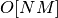
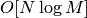
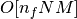
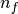
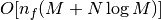

Periodogram Implementations¶
This package contains several implementations of the Lomb-Scargle Periodogram,
which can be selected using the method keyword of the Lomb-Scargle power.
By design all methods will return the same results, though each has its
advandages and disadganvages.
For example, to compute a periodogram using the fast chi-square method, you can do the following:
First we generate some data:
>>> import numpy as np
>>> rand = np.random.RandomState(42)
>>> t = 100 * rand.rand(100)
>>> y = np.sin(2 * np.pi * t) + 0.1 * rand.randn(100)
Next we compute the periodogram using method='fastchi2':
>>> from lombscargle import LombScargle
>>> frequency, power = LombScargle(t, y).autopower(method='fastchi2')
List of Methods¶
There are six methods available, listed as follows:
method='auto'¶
The auto method is the default, and will attempt to select the best option
from the following methods using heuristics driven by the input data.
method='slow'¶
The slow method is a pure-Python implementation of the original Lomb-Scargle
periodogram, enhanced to account for observational noise, and to allow a
floating mean (sometimes called the generalized periodogram). The method is not
particularly fast, scaling approximately as 
for  data points and
data points and  frequencies.
frequencies.
method='scipy'¶
The scipy method wraps the C implementation of the original Lomb-Scargle
periodogram which is available in scipy.signal.lombscargle(). This is
slightly faster than the slow method, but does not allow for errors in
data or extensions such as the floating mean. The scaling is approximately
for data points and frequencies.
method='fast'¶
The fast method is a pure-Python implementation of the fast periodogram of
Press & Rybicki. It uses an extirpolation trick to approximate the periodogram
frequencies using a fast Fourier transform. As with the slow method, it can
handle data errors and floating mean. The scaling is approximately
 for data points and frequencies.
method='chi2'¶
The chi2 method is a pure-Python implementation based on matrix algebra.
It utilizes the fact that the Lomb-Scargle periodogram at each frequency
is equivalent to the least-squares fit of a sinusoid to the data. The advantage
of the chi2 method is that it allows extensions of the periodogram to multiple
Fourier terms, specified by the nterms parameter. For the standard problem, it
is slightly slower than method='slow' and scales as 
for data points, frequencies, and  Fourier terms.
method='fastchi2'¶
The fast chi-squared method of Palmer (2009) is equivalent to the chi2 method,
but the matrices are constructed using the FFT-based approach of the fast method.
The result is a relatively efficient periodogram (though not nearly as efficient as
the fast method) which can be extended to multiple terms. The scaling is
approximately  for data points,
frequencies, and Fourier terms.
Summary¶
The following table summarizes the features of the above algorithms:
| method | Computational Scaling | Observational Uncertainties | Bias Term (Floating Mean) | Multiple Terms |
|---|---|---|---|---|
"slow" |
Yes | Yes | No | |
"scipy" |
No | No | No | |
"fast" |
Yes | Yes | No | |
"chi2" |
Yes | Yes | Yes | |
"fastchi2" |
Yes | Yes | Yes |
In the Computational Scaling column, is the number of data points,
is the number of frequencies, and is the number of
Fourier terms for a multi-term fit.